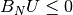
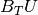
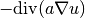
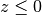

Model¶
- class Model(*args)¶
GeFEM Model object
Model variables store the variables and the state data and the description of a model. This includes the global tangent matrix, the right hand side and the constraints. There are two kinds of models, the real and the complex models.
General constructor for Model objects
- MD = Model('real') Build a model for real unknowns.
- MD = Model('complex') Build a model for complex unknowns.
- Neumann_term(varname, region)¶
Gives the assembly string corresponding to the Neumann term of the fem variable varname on region. It is deduced from the assembly string declared by the model bricks. region should be the index of a boundary region on the mesh where varname is defined. Care to call this function only after all the volumic bricks have been declared. Complains, if a brick omit to declare an assembly string.
- add_Dirichlet_condition_with_Nitsche_method(mim, varname, Neumannterm, datagamma0, region, theta=None, *args)¶
Synopsis: ind = Model.add_Dirichlet_condition_with_Nitsche_method(self, MeshIm mim, string varname, string Neumannterm, string datagamma0, int region[, scalar theta][, string dataname])
Add a Dirichlet condition on the variable varname and the mesh region region. This region should be a boundary. Neumannterm is the expression of the Neumann term (obtained by the Green formula) described as an expression of the high-level generic assembly language. This term can be obtained by Model.Neumann_term(varname, region) once all volumic bricks have been added to the model. The Dirichlet condition is prescribed with Nitsche’s method. datag is the optional right hand side of the Dirichlet condition. datagamma0 is the Nitsche’s method parameter. theta is a scalar value which can be positive or negative. theta = 1 corresponds to the standard symmetric method which is conditionnaly coercive for gamma0 small. theta = -1 corresponds to the skew-symmetric method which is inconditionnaly coercive. theta = 0 (default) is the simplest method for which the second derivative of the Neumann term is not necessary even for nonlinear problems. Return the brick index in the model.
- add_Dirichlet_condition_with_multipliers(mim, varname, mult_description, region, dataname=None)¶
Add a Dirichlet condition on the variable varname and the mesh region region. This region should be a boundary. The Dirichlet condition is prescribed with a multiplier variable described by mult_description. If mult_description is a string this is assumed to be the variable name corresponding to the multiplier (which should be first declared as a multiplier variable on the mesh region in the model). If it is a finite element method (mesh_fem object) then a multiplier variable will be added to the model and build on this finite element method (it will be restricted to the mesh region region and eventually some conflicting dofs with some other multiplier variables will be suppressed). If it is an integer, then a multiplier variable will be added to the model and build on a classical finite element of degree that integer. dataname is the optional right hand side of the Dirichlet condition. It could be constant or described on a fem; scalar or vector valued, depending on the variable on which the Dirichlet condition is prescribed. Return the brick index in the model.
- add_Dirichlet_condition_with_penalization(mim, varname, coeff, region, dataname=None, mf_mult=None)¶
Add a Dirichlet condition on the variable varname and the mesh region region. This region should be a boundary. The Dirichlet condition is prescribed with penalization. The penalization coefficient is initially coeff and will be added to the data of the model. dataname is the optional right hand side of the Dirichlet condition. It could be constant or described on a fem; scalar or vector valued, depending on the variable on which the Dirichlet condition is prescribed. mf_mult is an optional parameter which allows to weaken the Dirichlet condition specifying a multiplier space. Return the brick index in the model.
- add_Dirichlet_condition_with_simplification(varname, region, dataname=None)¶
Adds a (simple) Dirichlet condition on the variable varname and the mesh region region. The Dirichlet condition is prescribed by a simple post-treatment of the final linear system (tangent system for nonlinear problems) consisting of modifying the lines corresponding to the degree of freedom of the variable on region (0 outside the diagonal, 1 on the diagonal of the matrix and the expected value on the right hand side). The symmetry of the linear system is kept if all other bricks are symmetric. This brick is to be reserved for simple Dirichlet conditions (only dof declared on the correspodning boundary are prescribed). The application of this brick on reduced dof may be problematic. Intrinsic vectorial finite element method are not supported. dataname is the optional right hand side of the Dirichlet condition. It could be constant (but in that case, it can only be applied to Lagrange f.e.m.) or (important) described on the same finite element method as varname. Returns the brick index in the model.
- add_Fourier_Robin_brick(mim, varname, dataexpr, region)¶
Add a Fourier-Robin term to the model relatively to the variable varname. This corresponds to a weak term of the form . dataexpr is the parameter of the Fourier-Robin condition. It can be an arbitrary valid expression of the high-level generic assembly language (except for the complex version for which it should be a data of the model). region is the mesh region on which the term is added. Return the brick index in the model.
- add_Helmholtz_brick(mim, varname, dataexpr, region=None)¶
Add a Helmholtz term to the model relatively to the variable varname. dataexpr is the wave number. region is an optional mesh region on which the term is added. If it is not specified, it is added on the whole mesh. Return the brick index in the model.
- add_Kirchhoff_Love_Neumann_term_brick(mim, varname, dataname_M, dataname_divM, region)¶
Add a Neumann term brick for Kirchhoff-Love model on the variable varname and the mesh region region. dataname_M represents the bending moment tensor and dataname_divM its divergence. Return the brick index in the model.
- add_Kirchhoff_Love_plate_brick(mim, varname, dataname_D, dataname_nu, region=None)¶
Add a bilaplacian brick on the variable varname and on the mesh region region. This represent a term
 where
is a the flexion modulus determined by dataname_D. The term is
integrated by part following a Kirchhoff-Love plate model
with dataname_nu the poisson ratio.
Return the brick index in the model.
where
is a the flexion modulus determined by dataname_D. The term is
integrated by part following a Kirchhoff-Love plate model
with dataname_nu the poisson ratio.
Return the brick index in the model.
- add_Laplacian_brick(mim, varname, region=None)¶
Add a Laplacian term to the model relatively to the variable varname (in fact with a minus :
 ).
If this is a vector valued variable, the Laplacian term is added
componentwise. region is an optional mesh region on which the term
is added. If it is not specified, it is added on the whole mesh. Return
the brick index in the model.
).
If this is a vector valued variable, the Laplacian term is added
componentwise. region is an optional mesh region on which the term
is added. If it is not specified, it is added on the whole mesh. Return
the brick index in the model.
- add_Mindlin_Reissner_plate_brick(mim, mim_reduced, varname_u3, varname_theta, param_E, param_nu, param_epsilon, param_kappa, variant=None, *args)¶
Synopsis: ind = Model.add_Mindlin_Reissner_plate_brick(self, MeshIm mim, MeshIm mim_reduced, string varname_u3, string varname_theta , string param_E, string param_nu, string param_epsilon, string param_kappa [,int variant [, int region]])
Add a term corresponding to the classical Reissner-Mindlin plate model for which varname_u3 is the transverse displacement, varname_theta the rotation of fibers normal to the midplane, ‘param_E’ the Young Modulus, param_nu the poisson ratio, param_epsilon the plate thickness, param_kappa the shear correction factor. Note that since this brick uses the high level generic assembly language, the parameter can be regular expression of this language. There are three variants. variant = 0 corresponds to the an unreduced formulation and in that case only the integration method mim is used. Practically this variant is not usable since it is subject to a strong locking phenomenon. variant = 1 corresponds to a reduced integration where mim is used for the rotation term and mim_reduced for the transverse shear term. variant = 2 (default) corresponds to the projection onto a rotated RT0 element of the transverse shear term. For the moment, this is adapted to quadrilateral only (because it is not sufficient to remove the locking phenomenon on triangle elements). Note also that if you use high order elements, the projection on RT0 will reduce the order of the approximation. Returns the brick index in the model.
- add_Newmark_scheme(varname, beta, gamma)¶
Attach a theta method for the time discretization of the variable varname. Valid only if there is at most second order time derivative of the variable.
- add_Nitsche_contact_with_rigid_obstacle_brick(mim, varname, Neumannterm, dataname_obstacle, gamma0name, region, theta=None, *args)¶
Synopsis: ind = Model.add_Nitsche_contact_with_rigid_obstacle_brick(self, MeshIm mim, string varname, string Neumannterm, string dataname_obstacle, string gamma0name, int region[, scalar theta[, string dataname_friction_coeff[, string dataname_alpha, string dataname_wt]]])
Adds a contact condition with or without Coulomb friction on the variable varname and the mesh boundary region. The contact condition is prescribed with Nitsche’s method. The rigid obstacle should be described with the data dataname_obstacle being a signed distance to the obstacle (interpolated on a finite element method). gamma0name is the Nitsche’s method parameter. theta is a scalar value which can be positive or negative. theta = 1 corresponds to the standard symmetric method which is conditionnaly coercive for gamma0 small. theta = -1 corresponds to the skew-symmetric method which is inconditionnaly coercive. theta = 0 is the simplest method for which the second derivative of the Neumann term is not necessary. The optional parameter dataname_friction_coeff is the friction coefficient which could be constant or defined on a finite element method. CAUTION: This brick has to be added in the model after all the bricks corresponding to partial differential terms having a Neumann term. Moreover, This brick can only be applied to bricks declaring their Neumann terms. Returns the brick index in the model.
- add_Nitsche_fictitious_domain_contact_brick(mim, varname1, varname2, dataname_d1, dataname_d2, gamma0name, theta=None, *args)¶
Synopsis: ind = Model.add_Nitsche_fictitious_domain_contact_brick(self, MeshIm mim, string varname1, string varname2, string dataname_d1, string dataname_d2, string gamma0name [, scalar theta[, string dataname_friction_coeff[, string dataname_alpha, string dataname_wt1,string dataname_wt2]]])
Adds a contact condition with or without Coulomb friction between two bodies in a fictitious domain. The contact condition is applied on the variable varname_u1 corresponds with the first and slave body with Nitsche’s method and on the variable varname_u2 corresponds with the second and master body with Nitsche’s method. The contact condition is evaluated on the fictitious slave boundary. The first body should be described by the level-set dataname_d1 and the second body should be described by the level-set dataname_d2. gamma0name is the Nitsche’s method parameter. theta is a scalar value which can be positive or negative. theta = 1 corresponds to the standard symmetric method which is conditionnaly coercive for gamma0 small. theta = -1 corresponds to the skew-symmetric method which is inconditionnaly coercive. theta = 0 is the simplest method for which the second derivative of the Neumann term is not necessary. The optional parameter dataname_friction_coeff is the friction coefficient which could be constant or defined on a finite element method. CAUTION: This brick has to be added in the model after all the bricks corresponding to partial differential terms having a Neumann term. Moreover, This brick can only be applied to bricks declaring their Neumann terms. Returns the brick index in the model.
- add_Nitsche_large_sliding_contact_brick_raytracing(unbiased_version, dataname_r, release_distance, dataname_fr=None, *args)¶
Synopsis: ind = Model.add_Nitsche_large_sliding_contact_brick_raytracing(self, bool unbiased_version, string dataname_r, scalar release_distance[, string dataname_fr[, string dataname_alpha[, int version]]])
Adds a large sliding contact with friction brick to the model based on the Nitsche’s method. This brick is able to deal with self-contact, contact between several deformable bodies and contact with rigid obstacles. It uses the high-level generic assembly. It adds to the model a raytracing_interpolate_transformation object. “unbiased_version” refers to the version of Nische’s method to be used. (unbiased or biased one). For each slave boundary a material law should be defined as a function of the dispacement variable on this boundary. The release distance should be determined with care (generally a few times a mean element size, and less than the thickness of the body). Initially, the brick is added with no contact boundaries. The contact boundaries and rigid bodies are added with special functions. version is 0 (the default value) for the non-symmetric version and 1 for the more symmetric one (not fully symmetric even without friction).
- add_Nitsche_midpoint_contact_with_rigid_obstacle_brick(mim, varname, Neumannterm, Neumannterm_wt, dataname_obstacle, gamma0name, region, theta, dataname_friction_coeff, dataname_alpha, dataname_wt)¶
EXPERIMENTAL BRICK: for midpoint scheme only !! Adds a contact condition with or without Coulomb friction on the variable varname and the mesh boundary region. The contact condition is prescribed with Nitsche’s method. The rigid obstacle should be described with the data dataname_obstacle being a signed distance to the obstacle (interpolated on a finite element method). gamma0name is the Nitsche’s method parameter. theta is a scalar value which can be positive or negative. theta = 1 corresponds to the standard symmetric method which is conditionnaly coercive for gamma0 small. theta = -1 corresponds to the skew-symmetric method which is inconditionnaly coercive. theta = 0 is the simplest method for which the second derivative of the Neumann term is not necessary. The optional parameter dataname_friction_coeff is the friction coefficient which could be constant or defined on a finite element method. Returns the brick index in the model.
- add_assembly_assignment(dataname, expression, region=None, *args)¶
Synopsis: Model.add_assembly_assignment(self, string dataname, string expression[, int region[, int order[, int before]]])
Adds expression expr to be evaluated at assembly time and being assigned to the data dataname which has to be of im_data type. This allows for instance to store a sub-expression of an assembly computation to be used on an other assembly. It can be used for instance to store the plastic strain in plasticity models. order represents the order of assembly where this assignement has to be done (potential(0), weak form(1) or tangent system(2) or at each order(-1)). The default value is 1. If before = 1, the the assignement is perfromed before the computation of the other assembly terms, such that the data can be used in the remaining of the assembly as an intermediary result (be careful that it is still considered as a data, no derivation of the expression is performed for the tangent system). If before = 0 (default), the assignement is done after the assembly terms.
- add_basic_contact_brick(varname_u, multname_n, multname_t=None, *args)¶
Synopsis: ind = Model.add_basic_contact_brick(self, string varname_u, string multname_n[, string multname_t], string dataname_r, Spmat BN[, Spmat BT, string dataname_friction_coeff][, string dataname_gap[, string dataname_alpha[, int augmented_version[, string dataname_gamma, string dataname_wt]]])
Add a contact with or without friction brick to the model. If U is the vector of degrees of freedom on which the unilateral constraint is applied, the matrix BN have to be such that this constraint is defined by . A friction condition can be considered by adding the three parameters multname_t, BT and dataname_friction_coeff. In this case, the tangential displacement is  and the matrix BT should have as many rows as BN multiplied by
 where
where  is the domain dimension.
In this case also, dataname_friction_coeff is a data which represents
the coefficient of friction. It can be a scalar or a vector representing a
value on each contact condition. The unilateral constraint is prescribed
thank to a multiplier
multname_n whose dimension should be equal to the number of rows of
BN. If a friction condition is added, it is prescribed with a
multiplier multname_t whose dimension should be equal to the number
of rows of BT. The augmentation parameter r should be chosen in
a range of
acceptabe values (see Getfem user documentation). dataname_gap is an
optional parameter representing the initial gap. It can be a single value
or a vector of value. dataname_alpha is an optional homogenization
parameter for the augmentation parameter
(see Getfem user documentation). The parameter augmented_version
indicates the augmentation strategy : 1 for the non-symmetric
Alart-Curnier augmented Lagrangian, 2 for the symmetric one (except for
the coupling between contact and Coulomb friction), 3 for the
unsymmetric method with augmented multipliers, 4 for the unsymmetric
method with augmented multipliers and De Saxce projection.
is the domain dimension.
In this case also, dataname_friction_coeff is a data which represents
the coefficient of friction. It can be a scalar or a vector representing a
value on each contact condition. The unilateral constraint is prescribed
thank to a multiplier
multname_n whose dimension should be equal to the number of rows of
BN. If a friction condition is added, it is prescribed with a
multiplier multname_t whose dimension should be equal to the number
of rows of BT. The augmentation parameter r should be chosen in
a range of
acceptabe values (see Getfem user documentation). dataname_gap is an
optional parameter representing the initial gap. It can be a single value
or a vector of value. dataname_alpha is an optional homogenization
parameter for the augmentation parameter
(see Getfem user documentation). The parameter augmented_version
indicates the augmentation strategy : 1 for the non-symmetric
Alart-Curnier augmented Lagrangian, 2 for the symmetric one (except for
the coupling between contact and Coulomb friction), 3 for the
unsymmetric method with augmented multipliers, 4 for the unsymmetric
method with augmented multipliers and De Saxce projection.
- add_basic_contact_brick_two_deformable_bodies(varname_u1, varname_u2, multname_n, dataname_r, BN1, BN2, dataname_gap=None, *args)¶
Synopsis: ind = Model.add_basic_contact_brick_two_deformable_bodies(self, string varname_u1, string varname_u2, string multname_n, string dataname_r, Spmat BN1, Spmat BN2[, string dataname_gap[, string dataname_alpha[, int augmented_version]]])
- Add a frictionless contact condition to the model between two deformable
- bodies. If U1, U2 are the vector of degrees of freedom on which the unilateral constraint is applied, the matrices BN1 and BN2 have to be such that this condition is defined by $B_{N1} U_1 B_{N2} U_2 + le gap$. The constraint is prescribed thank to a multiplier multname_n whose dimension should be equal to the number of lines of BN. The augmentation parameter r should be chosen in a range of acceptabe values (see Getfem user documentation). dataname_gap is an optional parameter representing the initial gap. It can be a single value or a vector of value. dataname_alpha is an optional homogenization parameter for the augmentation parameter (see Getfem user documentation). The parameter aug_version indicates the augmentation strategy : 1 for the non-symmetric Alart-Curnier augmented Lagrangian, 2 for the symmetric one, 3 for the unsymmetric method with augmented multiplier.
- add_bilaplacian_brick(mim, varname, dataname, region=None)¶
Add a bilaplacian brick on the variable varname and on the mesh region region. This represent a term
.
where is a coefficient determined by dataname which
could be constant or described on a f.e.m. The corresponding weak form
is .
Return the brick index in the model.
- add_constraint_with_multipliers(varname, multname, B, *args)¶
Synopsis: ind = Model.add_constraint_with_multipliers(self, string varname, string multname, Spmat B, {vec L | string dataname})
Add an additional explicit constraint on the variable varname thank to a multiplier multname peviously added to the model (should be a fixed size variable). The constraint is with B being a rectangular sparse matrix. It is possible to change the constraint at any time with the methods Model.set_private_matrix() and Model.set_private_rhs(). If dataname is specified instead of L, the vector L is defined in the model as data with the given name. Return the brick index in the model.
- add_constraint_with_penalization(varname, coeff, B, *args)¶
Synopsis: ind = Model.add_constraint_with_penalization(self, string varname, scalar coeff, Spmat B, {vec L | string dataname})
Add an additional explicit penalized constraint on the variable varname. The constraint is :math`BU=L` with B being a rectangular sparse matrix. Be aware that B should not contain a palin row, otherwise the whole tangent matrix will be plain. It is possible to change the constraint at any time with the methods Model.set_private_matrix() and Model.set_private_rhs(). The method Model.change_penalization_coeff() can be used. If dataname is specified instead of L, the vector L is defined in the model as data with the given name. Return the brick index in the model.
- add_contact_boundary_to_unbiased_Nitsche_large_sliding_contact_brick(indbrick, mim, region, dispname, lambdaname, wname=None)¶
Adds a contact boundary to an existing unbiased Nitschelarge sliding contact with friction brick which is both master and slave.
- add_contact_with_rigid_obstacle_brick(mim, varname_u, multname_n, multname_t=None, *args)¶
Synopsis: ind = Model.add_contact_with_rigid_obstacle_brick(self, MeshIm mim, string varname_u, string multname_n[, string multname_t], string dataname_r[, string dataname_friction_coeff], int region, string obstacle[, int augmented_version])
DEPRECATED FUNCTION. Use ‘add nodal contact with rigid obstacle brick’ instead.
- add_data(name, size)¶
Add a fixed size data to the model. sizes is either a integer (for a scalar or vector data) or a vector of dimensions for a tensor data. name is the data name.
- add_elastoplasticity_brick(mim, projname, varname, previous_dep_name, datalambda, datamu, datathreshold, datasigma, region=None)¶
Old (obsolete) brick which do not use the high level generic assembly. Add a nonlinear elastoplastic term to the model relatively to the variable varname, in small deformations, for an isotropic material and for a quasistatic model. projname is the type of projection that used: only the Von Mises projection is available with ‘VM’ or ‘Von Mises’. datasigma is the variable representing the constraints on the material. previous_dep_name represents the displacement at the previous time step. Moreover, the finite element method on which varname is described is an K ordered mesh_fem, the datasigma one have to be at least an K-1 ordered mesh_fem. datalambda and datamu are the Lame coefficients of the studied material. datathreshold is the plasticity threshold of the material. The three last variables could be constants or described on the same finite element method. region is an optional mesh region on which the term is added. If it is not specified, it is added on the whole mesh. Return the brick index in the model.
- add_element_extrapolation_transformation(transname, source_mesh, elt_corr)¶
Add a special interpolation transformation which represents the identity transformation but allows to evaluate the expression on another element than the current element by polynomial extrapolation. It is used for stabilization term in fictitious domain applications. the array elt_cor should be a two entry array whose first line contains the elements concerned by the transformation and the second line the respective elements on which the extrapolation has to be made. If an element is not listed in elt_cor the evaluation is just made on the current element.
- add_elementary_rotated_RT0_projection(transname)¶
Experimental method ...
- add_explicit_matrix(varname1, varname2, B, issymmetric=None, *args)¶
Synopsis: ind = Model.add_explicit_matrix(self, string varname1, string varname2, Spmat B[, int issymmetric[, int iscoercive]])
Add a brick representing an explicit matrix to be added to the tangent linear system relatively to the variables varname1 and varname2. The given matrix should have has many rows as the dimension of varname1 and as many columns as the dimension of varname2. If the two variables are different and if issymmetric is set to 1 then the transpose of the matrix is also added to the tangent system (default is 0). Set iscoercive to 1 if the term does not affect the coercivity of the tangent system (default is 0). The matrix can be changed by the command Model.set_private_matrix(). Return the brick index in the model.
- add_explicit_rhs(varname, L)¶
Add a brick representing an explicit right hand side to be added to the right hand side of the tangent linear system relatively to the variable varname. The given rhs should have the same size than the dimension of varname. The rhs can be changed by the command Model.set_private_rhs(). If dataname is specified instead of L, the vector L is defined in the model as data with the given name. Return the brick index in the model.
- add_fem_data(name, mf, sizes=None)¶
Add a data to the model linked to a MeshFem. name is the data name, sizes an optional parameter which is either an integer or a vector of suplementary dimensions with respect to mf.
- add_fem_variable(name, mf)¶
Add a variable to the model linked to a MeshFem. name is the variable name.
- add_filtered_fem_variable(name, mf, region)¶
Add a variable to the model linked to a MeshFem. The variable is filtered in the sense that only the dof on the region are considered. name is the variable name.
- add_finite_strain_elasticity_brick(mim, constitutive_law, varname, params, region=None)¶
Add a nonlinear elasticity term to the model relatively to the variable varname. lawname is the constitutive law which could be ‘SaintVenant Kirchhoff’, ‘Mooney Rivlin’, ‘Neo Hookean’, ‘Ciarlet Geymonat’ or ‘Generalized Blatz Ko’. ‘Mooney Rivlin’ and ‘Neo Hookean’ law names have to be preceeded with the word ‘Compressible’ or ‘Incompressible’ to force using the corresponding version. The compressible version of these laws requires one additional material coefficient.
IMPORTANT : if the variable is defined on a 2D mesh, the plane strain approximation is automatically used. params is a vector of parameters for the constitutive law. Its length depends on the law. It could be a short vector of constant values or a vector field described on a finite element method for variable coefficients. region is an optional mesh region on which the term is added. If it is not specified, it is added on the whole mesh. This brick use the high-level generic assembly. Returns the brick index in the model.
- add_finite_strain_elastoplasticity_brick(mim, lawname, unknowns_type, varnames=None, *args)¶
Synopsis: ind = Model.add_finite_strain_elastoplasticity_brick(self, MeshIm mim , string lawname, string unknowns_type [, string varnames, ...] [, string params, ...] [, int region = -1])
Add a finite strain elastoplasticity brick to the model. For the moment there is only one supported law defined through lawname as “Simo_Miehe”. This law supports to possibilities of unknown variables to solve for defined by means of unknowns_type set to either ‘DISPLACEMENT_AND_PLASTIC_MULTIPLIER’ (integer value 1) or ‘DISPLACEMENT_AND_PLASTIC_MULTIPLIER_AND_PRESSURE’ (integer value 3). The “Simo_Miehe” law expects as varnames a set of the following names that have to be defined as variables in the model:
- the displacement variable which has to be defined as an unknown,
- the plastic multiplier which has also defined as an unknown,
- optionally the pressure variable for a mixed displacement-pressure formulation for ‘DISPLACEMENT_AND_PLASTIC_MULTIPLIER_AND_PRESSURE’ as unknowns_type,
- the name of a (scalar) fem_data or im_data field that holds the plastic strain at the previous time step, and
- the name of a fem_data or im_data field that holds all non-repeated components of the inverse of the plastic right Cauchy-Green tensor at the previous time step (it has to be a 4 element vector for plane strain 2D problems and a 6 element vector for 3D problems).
The “Simo_Miehe” law also expects as params a set of the following three parameters:
- an expression for the initial bulk modulus K,
- an expression for the initial shear modulus G,
- the name of a user predefined function that decribes the yield limit as a function of the hardening variable (both the yield limit and the hardening variable values are assumed to be Frobenius norms of appropriate stress and strain tensors, respectively).
As usual, region is an optional mesh region on which the term is added. If it is not specified, it is added on the whole mesh. Return the brick index in the model.
- add_finite_strain_incompressibility_brick(mim, varname, multname_pressure, region=None)¶
Add a finite strain incompressibility condition on variable (for large strain elasticity). multname_pressure is a variable which represent the pressure. Be aware that an inf-sup condition between the finite element method describing the pressure and the primal variable has to be satisfied. region is an optional mesh region on which the term is added. If it is not specified, it is added on the whole mesh. Return the brick index in the model. This brick is equivalent to the nonlinear incompressibility brick but uses the high-level generic assembly adding the term p*(1-Det(Id(meshdim)+Grad_u)) if p is the multiplier and u the variable which represent the displacement.
- add_generalized_Dirichlet_condition_with_Nitsche_method(mim, varname, Neumannterm, gamma0name, region, theta=None)¶
Add a Dirichlet condition on the variable varname and the mesh region region. This version is for vector field. It prescribes a condition @f$ Hu = r @f$ where H is a matrix field. CAUTION : the matrix H should have all eigenvalues equal to 1 or 0. The region should be a boundary. Neumannterm is the expression of the Neumann term (obtained by the Green formula) described as an expression of the high-level generic assembly language. This term can be obtained by Model.Neumann_term(varname, region) once all volumic bricks have been added to the model. The Dirichlet condition is prescribed with Nitsche’s method. dataname is the optional right hand side of the Dirichlet condition. It could be constant or described on a fem. gamma0name is the Nitsche’s method parameter. theta is a scalar value which can be positive or negative. theta = 1 corresponds to the standard symmetric method which is conditionnaly coercive for gamma0 small. theta = -1 corresponds to the skew-symmetric method which is inconditionnaly coercive. theta = 0 is the simplest method for which the second derivative of the Neumann term is not necessary even for nonlinear problems. Hname is the data corresponding to the matrix field H. It has to be a constant matrix or described on a scalar fem. Returns the brick index in the model. (This brick is not fully tested)
- add_generalized_Dirichlet_condition_with_multipliers(mim, varname, mult_description, region, dataname, Hname)¶
Add a Dirichlet condition on the variable varname and the mesh region region. This version is for vector field. It prescribes a condition where H is a matrix field. The region should be a boundary. The Dirichlet condition is prescribed with a multiplier variable described by mult_description. If mult_description is a string this is assumed to be the variable name corresponding to the multiplier (which should be first declared as a multiplier variable on the mesh region in the model). If it is a finite element method (mesh_fem object) then a multiplier variable will be added to the model and build on this finite element method (it will be restricted to the mesh region region and eventually some conflicting dofs with some other multiplier variables will be suppressed). If it is an integer, then a multiplier variable will be added to the model and build on a classical finite element of degree that integer. dataname is the right hand side of the Dirichlet condition. It could be constant or described on a fem; scalar or vector valued, depending on the variable on which the Dirichlet condition is prescribed. Hname is the data corresponding to the matrix field H. Returns the brick index in the model.
- add_generalized_Dirichlet_condition_with_penalization(mim, varname, coeff, region, dataname, Hname, mf_mult=None)¶
Add a Dirichlet condition on the variable varname and the mesh region region. This version is for vector field. It prescribes a condition where H is a matrix field. The region should be a boundary. The Dirichlet condition is prescribed with penalization. The penalization coefficient is intially coeff and will be added to the data of the model. dataname is the right hand side of the Dirichlet condition. It could be constant or described on a fem; scalar or vector valued, depending on the variable on which the Dirichlet condition is prescribed. Hname is the data corresponding to the matrix field H. It has to be a constant matrix or described on a scalar fem. mf_mult is an optional parameter which allows to weaken the Dirichlet condition specifying a multiplier space. Return the brick index in the model.
- add_generic_elliptic_brick(mim, varname, dataname, region=None)¶
Add a generic elliptic term to the model relatively to the variable varname. The shape of the elliptic term depends both on the variable and the data. This corresponds to a term  where is the data and
 the variable. The data can be
a scalar,
a matrix or an order four tensor. The variable can be vector valued or
not. If the data is a scalar or a matrix and the variable is vector
valued then the term is added componentwise. An order four tensor data
is allowed for vector valued variable only. The data can be constant or
describbed on a fem. Of course, when the data is a tensor describe on a
finite element method (a tensor field) the data can be a huge vector.
The components of the matrix/tensor have to be stored with the fortran
order (columnwise) in the data vector (compatibility with blas). The
symmetry of the given matrix/tensor is not verified (but assumed). If
this is a vector valued variable, the elliptic term is added
componentwise. region is an optional mesh region on which the term is
added. If it is not specified, it is added on the whole mesh. Note that
for the real
version which uses the high-level generic assembly language, dataname
can be any regular expression of the high-level generic assembly
language (like “1”, “sin(X(1))” or “Norm(u)” for instance) even
depending on model variables. Return the
brick index in the model.
the variable. The data can be
a scalar,
a matrix or an order four tensor. The variable can be vector valued or
not. If the data is a scalar or a matrix and the variable is vector
valued then the term is added componentwise. An order four tensor data
is allowed for vector valued variable only. The data can be constant or
describbed on a fem. Of course, when the data is a tensor describe on a
finite element method (a tensor field) the data can be a huge vector.
The components of the matrix/tensor have to be stored with the fortran
order (columnwise) in the data vector (compatibility with blas). The
symmetry of the given matrix/tensor is not verified (but assumed). If
this is a vector valued variable, the elliptic term is added
componentwise. region is an optional mesh region on which the term is
added. If it is not specified, it is added on the whole mesh. Note that
for the real
version which uses the high-level generic assembly language, dataname
can be any regular expression of the high-level generic assembly
language (like “1”, “sin(X(1))” or “Norm(u)” for instance) even
depending on model variables. Return the
brick index in the model.
- add_im_data(name, mimd)¶
Add a data set to the model linked to a MeshImd. name is the data name.
- add_initialized_data(name, V, sizes=None)¶
Add an initialized fixed size data to the model. sizes an optional parameter which is either an integer or a vector dimensions that describes the format of the data. By default, the data is considered to b a vector field. name is the data name and V is the value of the data.
- add_initialized_fem_data(name, mf, V, sizes=None)¶
Add a data to the model linked to a MeshFem. name is the data name. The data is initiakized with V. The data can be a scalar or vector field. sizes an optional parameter which is either an integer or a vector of suplementary dimensions with respect to mf.
- add_integral_contact_between_nonmatching_meshes_brick(mim, varname_u1, varname_u2, multname, dataname_r, dataname_friction_coeff=None, *args)¶
Synopsis: ind = Model.add_integral_contact_between_nonmatching_meshes_brick(self, MeshIm mim, string varname_u1, string varname_u2, string multname, string dataname_r [, string dataname_friction_coeff], int region1, int region2 [, int option [, string dataname_alpha [, string dataname_wt1 , string dataname_wt2]]])
Add a contact with or without friction condition between nonmatching meshes to the model. This brick adds a contact which is defined in an integral way. It is the direct approximation of an augmented agrangian formulation (see Getfem user documentation) defined at the continuous level. The advantage should be a better scalability: the number of Newton iterations should be more or less independent of the mesh size. The condition is applied on the variables varname_u1 and varname_u2 on the boundaries corresponding to region1 and region2. multname should be a fem variable representing the contact stress for the frictionless case and the contact and friction stress for the case with friction. An inf-sup condition between multname and varname_u1 and varname_u2 is required. The augmentation parameter dataname_r should be chosen in a range of acceptable values. The optional parameter dataname_friction_coeff is the friction coefficient which could be constant or defined on a finite element method on the same mesh as varname_u1. Possible values for option is 1 for the non-symmetric Alart-Curnier augmented Lagrangian method, 2 for the symmetric one, 3 for the non-symmetric Alart-Curnier method with an additional augmentation and 4 for a new unsymmetric method. The default value is 1. In case of contact with friction, dataname_alpha, dataname_wt1 and dataname_wt2 are optional parameters to solve evolutionary friction problems.
- add_integral_contact_with_rigid_obstacle_brick(mim, varname_u, multname, dataname_obstacle, dataname_r, dataname_friction_coeff=None, *args)¶
Synopsis: ind = Model.add_integral_contact_with_rigid_obstacle_brick(self, MeshIm mim, string varname_u, string multname, string dataname_obstacle, string dataname_r [, string dataname_friction_coeff], int region [, int option [, string dataname_alpha [, string dataname_wt [, string dataname_gamma [, string dataname_vt]]]]])
Add a contact with or without friction condition with a rigid obstacle to the model. This brick adds a contact which is defined in an integral way. It is the direct approximation of an augmented Lagrangian formulation (see Getfem user documentation) defined at the continuous level. The advantage is a better scalability: the number of Newton iterations should be more or less independent of the mesh size. The contact condition is applied on the variable varname_u on the boundary corresponding to region. The rigid obstacle should be described with the data dataname_obstacle being a signed distance to the obstacle (interpolated on a finite element method). multname should be a fem variable representing the contact stress. An inf-sup condition beetween multname and varname_u is required. The augmentation parameter dataname_r should be chosen in a range of acceptabe values. The optional parameter dataname_friction_coeff is the friction coefficient which could be constant or defined on a finite element method. Possible values for option is 1 for the non-symmetric Alart-Curnier augmented Lagrangian method, 2 for the symmetric one, 3 for the non-symmetric Alart-Curnier method with an additional augmentation and 4 for a new unsymmetric method. The default value is 1. In case of contact with friction, dataname_alpha and dataname_wt are optional parameters to solve evolutionary friction problems. dataname_gamma and dataname_vt represent optional data for adding a parameter-dependent sliding velocity to the friction condition.
- add_integral_large_sliding_contact_brick_raytracing(dataname_r, release_distance, dataname_fr=None, *args)¶
Synopsis: ind = Model.add_integral_large_sliding_contact_brick_raytracing(self, string dataname_r, scalar release_distance, [, string dataname_fr[, string dataname_alpha[, int version]]])
Adds a large sliding contact with friction brick to the model. This brick is able to deal with self-contact, contact between several deformable bodies and contact with rigid obstacles. It uses the high-level generic assembly. It adds to the model a raytracing_interpolate_transformation object. For each slave boundary a multiplier variable should be defined. The release distance should be determined with care (generally a few times a mean element size, and less than the thickness of the body). Initially, the brick is added with no contact boundaries. The contact boundaries and rigid bodies are added with special functions. version is 0 (the default value) for the non-symmetric version and 1 for the more symmetric one (not fully symmetric even without friction).
- add_interpolate_transformation_from_expression(transname, source_mesh, target_mesh, expr)¶
Add a transformation to the model from mesh source_mesh to mesh target_mesh given by the expression expr which corresponds to a high-level generic assembly expression which may contains some variable of the model. CAUTION: the derivative of the transformation with used variable is taken into account in the computation of the tangen system. However, order two derivative is not implemented, so such tranformation is not allowed in the definition of a potential.
- add_isotropic_linearized_elasticity_brick(mim, varname, dataname_lambda, dataname_mu, region=None)¶
Add an isotropic linearized elasticity term to the model relatively to the variable varname. dataname_lambda and dataname_mu should contain the Lame coefficients. region is an optional mesh region on which the term is added. If it is not specified, it is added on the whole mesh. Return the brick index in the model.
- add_isotropic_linearized_elasticity_brick_pstrain(mim, varname, data_E, data_nu, region=None)¶
Add an isotropic linearized elasticity term to the model relatively to the variable varname. data_E and data_nu should contain the Young modulus and Poisson ratio, respectively. region is an optional mesh region on which the term is added. If it is not specified, it is added on the whole mesh. On two-dimensional meshes, the term will correpsond to a plain strain approximation. On three-dimensional meshes, it will correspond to the standard model. Return the brick index in the model.
- add_isotropic_linearized_elasticity_brick_pstress(mim, varname, data_E, data_nu, region=None)¶
Add an isotropic linearized elasticity term to the model relatively to the variable varname. data_E and data_nu should contain the Young modulus and Poisson ratio, respectively. region is an optional mesh region on which the term is added. If it is not specified, it is added on the whole mesh. On two-dimensional meshes, the term will correpsond to a plain stress approximation. On three-dimensional meshes, it will correspond to the standard model. Return the brick index in the model.
- add_linear_generic_assembly_brick(mim, expression, region=None, *args)¶
Synopsis: ind = Model.add_linear_generic_assembly_brick(self, MeshIm mim, string expression[, int region[, int is_symmetric[, int is_coercive]]])
Deprecated. Use Model.add_linear_term() instead.
- add_linear_incompressibility_brick(mim, varname, multname_pressure, region=None, *args)¶
Synopsis: ind = Model.add_linear_incompressibility_brick(self, MeshIm mim, string varname, string multname_pressure[, int region[, string dataexpr_coeff]])
Add a linear incompressibility condition on variable. multname_pressure is a variable which represent the pressure. Be aware that an inf-sup condition between the finite element method describing the pressure and the primal variable has to be satisfied. region is an optional mesh region on which the term is added. If it is not specified, it is added on the whole mesh. dataexpr_coeff is an optional penalization coefficient for nearly incompressible elasticity for instance. In this case, it is the inverse of the Lame coefficient
 . Return the brick index in the
model.
. Return the brick index in the
model.
- add_linear_term(mim, expression, region=None, *args)¶
Synopsis: ind = Model.add_linear_term(self, MeshIm mim, string expression[, int region[, int is_symmetric[, int is_coercive]]])
Adds a matrix term given by the assembly string expr which will be assembled in region region and with the integration method mim. Only the matrix term will be taken into account, assuming that it is linear. The advantage of declaring a term linear instead of nonlinear is that it will be assembled only once and no assembly is necessary for the residual. Take care that if the expression contains some variables and if the expression is a potential or of first order (i.e. describe the weak form, not the derivative of the weak form), the expression will be derivated with respect to all variables. You can specify if the term is symmetric, coercive or not. If you are not sure, the better is to declare the term not symmetric and not coercive. But some solvers (conjugate gradient for instance) are not allowed for non-coercive problems. brickname is an otpional name for the brick.
- add_macro(name, expr)¶
Define a new macro for the high generic assembly language. The name include the parameters. For instance name=’sp(a,b)’, expr=’a.b’ is a valid definition. Macro without parameter can also be defined. For instance name=’x1’, expr=’X[1]’ is valid. Teh form name=’grad(u)’, expr=’Grad_u’ is also allowed but in that case, the parameter ‘u’ will only be allowed to be a variable name when using the macro. Note that macros can be directly defined inside the assembly strings with the keyword ‘Def’.
- add_mass_brick(mim, varname, dataexpr_rho=None, *args)¶
Synopsis: ind = Model.add_mass_brick(self, MeshIm mim, string varname[, string dataexpr_rho[, int region]])
Add mass term to the model relatively to the variable varname. If specified, the data dataexpr_rho is the density (1 if omitted). region is an optional mesh region on which the term is added. If it is not specified, it is added on the whole mesh. Return the brick index in the model.
- add_master_contact_boundary_to_biased_Nitsche_large_sliding_contact_brick(indbrick, mim, region, dispname, wname=None)¶
Adds a master contact boundary to an existing biased Nitsche’s large sliding contact with friction brick.
- add_master_contact_boundary_to_large_sliding_contact_brick(indbrick, mim, region, dispname, wname=None)¶
Adds a master contact boundary to an existing large sliding contact with friction brick.
- add_master_contact_boundary_to_projection_transformation(transname, m, dispname, region)¶
Add a master contact boundary with corresponding displacement variable dispname on a specific boundary region to an existing projection interpolate transformation called transname.
- add_master_contact_boundary_to_raytracing_transformation(transname, m, dispname, region)¶
Add a master contact boundary with corresponding displacement variable dispname on a specific boundary region to an existing raytracing interpolate transformation called transname.
- add_master_slave_contact_boundary_to_large_sliding_contact_brick(indbrick, mim, region, dispname, lambdaname, wname=None)¶
Adds a contact boundary to an existing large sliding contact with friction brick which is both master and slave (allowing the self-contact).
- add_multiplier(name, mf, primalname, mim=None, region=None)¶
Add a particular variable linked to a fem being a multiplier with respect to a primal variable. The dof will be filtered with the gmm::range_basis function applied on the terms of the model which link the multiplier and the primal variable. This in order to retain only linearly independent constraints on the primal variable. Optimized for boundary multipliers.
- add_nodal_contact_between_nonmatching_meshes_brick(mim1, mim2=None, *args)¶
Synopsis: ind = Model.add_nodal_contact_between_nonmatching_meshes_brick(self, MeshIm mim1[, MeshIm mim2], string varname_u1[, string varname_u2], string multname_n[, string multname_t], string dataname_r[, string dataname_fr], int rg1, int rg2[, int slave1, int slave2, int augmented_version])
Add a contact with or without friction condition between two faces of one or two elastic bodies. The condition is applied on the variable varname_u1 or the variables varname_u1 and varname_u2 depending if a single or two distinct displacement fields are given. Integers rg1 and rg2 represent the regions expected to come in contact with each other. In the single displacement variable case the regions defined in both rg1 and rg2 refer to the variable varname_u1. In the case of two displacement variables, rg1 refers to varname_u1 and rg2 refers to varname_u2. multname_n should be a fixed size variable whose size is the number of degrees of freedom on those regions among the ones defined in rg1 and rg2 which are characterized as “slaves”. It represents the contact equivalent nodal normal forces. multname_t should be a fixed size variable whose size corresponds to the size of multname_n multiplied by qdim - 1 . It represents the contact equivalent nodal tangent (frictional) forces. The augmentation parameter r should be chosen in a range of acceptabe values (close to the Young modulus of the elastic body, see Getfem user documentation). The friction coefficient stored in the parameter fr is either a single value or a vector of the same size as multname_n. The optional parameters slave1 and slave2 declare if the regions defined in rg1 and rg2 are correspondingly considered as “slaves”. By default slave1 is true and slave2 is false, i.e. rg1 contains the slave surfaces, while ‘rg2’ the master surfaces. Preferrably only one of slave1 and slave2 is set to true. The parameter augmented_version indicates the augmentation strategy : 1 for the non-symmetric Alart-Curnier augmented Lagrangian, 2 for the symmetric one (except for the coupling between contact and Coulomb friction), 3 for the new unsymmetric method. Basically, this brick computes the matrices BN and BT and the vectors gap and alpha and calls the basic contact brick.
- add_nodal_contact_with_rigid_obstacle_brick(mim, varname_u, multname_n, multname_t=None, *args)¶
Synopsis: ind = Model.add_nodal_contact_with_rigid_obstacle_brick(self, MeshIm mim, string varname_u, string multname_n[, string multname_t], string dataname_r[, string dataname_friction_coeff], int region, string obstacle[, int augmented_version])
Add a contact with or without friction condition with a rigid obstacle to the model. The condition is applied on the variable varname_u on the boundary corresponding to region. The rigid obstacle should be described with the string obstacle being a signed distance to the obstacle. This string should be an expression where the coordinates are ‘x’, ‘y’ in 2D and ‘x’, ‘y’, ‘z’ in 3D. For instance, if the rigid obstacle correspond to , the corresponding signed distance will be simply “z”. multname_n should be a fixed size variable whose size is the number of degrees of freedom on boundary region. It represents the contact equivalent nodal forces. In order to add a friction condition one has to add the multname_t and dataname_friction_coeff parameters. multname_t should be a fixed size variable whose size is the number of degrees of freedom on boundary region multiplied by
where is the domain dimension. It represents
the friction equivalent nodal forces.
The augmentation parameter r should be chosen in a
range of acceptabe values (close to the Young modulus of the elastic
body, see Getfem user documentation). dataname_friction_coeff is
the friction coefficient. It could be a scalar or a vector of values
representing the friction coefficient on each contact node.
The parameter augmented_version
indicates the augmentation strategy : 1 for the non-symmetric
Alart-Curnier augmented Lagrangian, 2 for the symmetric one (except for
the coupling between contact and Coulomb friction),
3 for the new unsymmetric method.
Basically, this brick compute the matrix BN
and the vectors gap and alpha and calls the basic contact brick.
- add_nonlinear_elasticity_brick(mim, varname, constitutive_law, dataname, region=None)¶
Add a nonlinear elasticity term to the model relatively to the variable varname (deprecated brick, use add_finite_strain_elaticity instead). lawname is the constitutive law which could be ‘SaintVenant Kirchhoff’, ‘Mooney Rivlin’, ‘neo Hookean’, ‘Ciarlet Geymonat’ or ‘generalized Blatz Ko’. ‘Mooney Rivlin’ and ‘neo Hookean’ law names can be preceded with the word ‘compressible’ or ‘incompressible’ to force using the corresponding version. The compressible version of these laws requires one additional material coefficient. By default, the incompressible version of ‘Mooney Rivlin’ law and the compressible one of the ‘neo Hookean’ law are considered. In general, ‘neo Hookean’ is a special case of the ‘Mooney Rivlin’ law that requires one coefficient less. IMPORTANT : if the variable is defined on a 2D mesh, the plane strain approximation is automatically used. dataname is a vector of parameters for the constitutive law. Its length depends on the law. It could be a short vector of constant values or a vector field described on a finite element method for variable coefficients. region is an optional mesh region on which the term is added. If it is not specified, it is added on the whole mesh. This brick use the low-level generic assembly. Returns the brick index in the model.
- add_nonlinear_generic_assembly_brick(mim, expression, region=None, *args)¶
Synopsis: ind = Model.add_nonlinear_generic_assembly_brick(self, MeshIm mim, string expression[, int region[, int is_symmetric[, int is_coercive]]])
Deprecated. Use Model.add_nonlinear_term() instead.
- add_nonlinear_incompressibility_brick(mim, varname, multname_pressure, region=None)¶
Add a nonlinear incompressibility condition on variable (for large strain elasticity). multname_pressure is a variable which represent the pressure. Be aware that an inf-sup condition between the finite element method describing the pressure and the primal variable has to be satisfied. region is an optional mesh region on which the term is added. If it is not specified, it is added on the whole mesh. Return the brick index in the model.
- add_nonlinear_term(mim, expression, region=None, *args)¶
Synopsis: ind = Model.add_nonlinear_term(self, MeshIm mim, string expression[, int region[, int is_symmetric[, int is_coercive]]])
Adds a nonlinear term given by the assembly string expr which will be assembled in region region and with the integration method mim. The expression can describe a potential or a weak form. Second order terms (i.e. containing second order test functions, Test2) are not allowed. You can specify if the term is symmetric, coercive or not. If you are not sure, the better is to declare the term not symmetric and not coercive. But some solvers (conjugate gradient for instance) are not allowed for non-coercive problems. brickname is an otpional name for the brick.
- add_nonmatching_meshes_contact_brick(mim1, mim2=None, *args)¶
Synopsis: ind = Model.add_nonmatching_meshes_contact_brick(self, MeshIm mim1[, MeshIm mim2], string varname_u1[, string varname_u2], string multname_n[, string multname_t], string dataname_r[, string dataname_fr], int rg1, int rg2[, int slave1, int slave2, int augmented_version])
DEPRECATED FUNCTION. Use ‘add nodal contact between nonmatching meshes brick’ instead.
- add_normal_Dirichlet_condition_with_Nitsche_method(mim, varname, Neumannterm, gamma0name, region, theta=None, *args)¶
Synopsis: ind = Model.add_normal_Dirichlet_condition_with_Nitsche_method(self, MeshIm mim, string varname, string Neumannterm, string gamma0name, int region[, scalar theta][, string dataname])
Add a Dirichlet condition to the normal component of the vector (or tensor) valued variable varname and the mesh region region. This region should be a boundary. Neumannterm is the expression of the Neumann term (obtained by the Green formula) described as an expression of the high-level generic assembly language. This term can be obtained by Model.Neumann_term(varname, region) once all volumic bricks have been added to the model. The Dirichlet condition is prescribed with Nitsche’s method. dataname is the optional right hand side of the Dirichlet condition. It could be constant or described on a fem. gamma0name is the Nitsche’s method parameter. theta is a scalar value which can be positive or negative. theta = 1 corresponds to the standard symmetric method which is conditionnaly coercive for gamma0 small. theta = -1 corresponds to the skew-symmetric method which is inconditionnaly coercive. theta = 0 is the simplest method for which the second derivative of the Neumann term is not necessary even for nonlinear problems. Returns the brick index in the model. (This brick is not fully tested)
- add_normal_Dirichlet_condition_with_multipliers(mim, varname, mult_description, region, dataname=None)¶
Add a Dirichlet condition to the normal component of the vector (or tensor) valued variable varname and the mesh region region. This region should be a boundary. The Dirichlet condition is prescribed with a multiplier variable described by mult_description. If mult_description is a string this is assumed to be the variable name corresponding to the multiplier (which should be first declared as a multiplier variable on the mesh region in the model). If it is a finite element method (mesh_fem object) then a multiplier variable will be added to the model and build on this finite element method (it will be restricted to the mesh region region and eventually some conflicting dofs with some other multiplier variables will be suppressed). If it is an integer, then a multiplier variable will be added to the model and build on a classical finite element of degree that integer. dataname is the optional right hand side of the Dirichlet condition. It could be constant or described on a fem; scalar or vector valued, depending on the variable on which the Dirichlet condition is prescribed (scalar if the variable is vector valued, vector if the variable is tensor valued). Returns the brick index in the model.
- add_normal_Dirichlet_condition_with_penalization(mim, varname, coeff, region, dataname=None, mf_mult=None)¶
Add a Dirichlet condition to the normal component of the vector (or tensor) valued variable varname and the mesh region region. This region should be a boundary. The Dirichlet condition is prescribed with penalization. The penalization coefficient is initially coeff and will be added to the data of the model. dataname is the optional right hand side of the Dirichlet condition. It could be constant or described on a fem; scalar or vector valued, depending on the variable on which the Dirichlet condition is prescribed (scalar if the variable is vector valued, vector if the variable is tensor valued). mf_mult is an optional parameter which allows to weaken the Dirichlet condition specifying a multiplier space. Returns the brick index in the model.
- add_normal_derivative_Dirichlet_condition_with_multipliers(mim, varname, mult_description, region, dataname=None, R_must_be_derivated=None)¶
Add a Dirichlet condition on the normal derivative of the variable varname and on the mesh region region (which should be a boundary. The general form is where
 is
the right hand side for the Dirichlet condition (0 for
homogeneous conditions) and
is
the right hand side for the Dirichlet condition (0 for
homogeneous conditions) and  is in a space of multipliers
defined by mult_description.
If mult_description is a string this is assumed
to be the variable name corresponding to the multiplier (which should be
first declared as a multiplier variable on the mesh region in the model).
If it is a finite element method (mesh_fem object) then a multiplier
variable will be added to the model and build on this finite element
method (it will be restricted to the mesh region region and eventually
some conflicting dofs with some other multiplier variables will be
suppressed). If it is an integer, then a multiplier variable will be
added to the model and build on a classical finite element of degree
that integer. dataname is an optional parameter which represents
the right hand side of the Dirichlet condition.
If R_must_be_derivated is set to true then the normal
derivative of dataname is considered.
Return the brick index in the model.
is in a space of multipliers
defined by mult_description.
If mult_description is a string this is assumed
to be the variable name corresponding to the multiplier (which should be
first declared as a multiplier variable on the mesh region in the model).
If it is a finite element method (mesh_fem object) then a multiplier
variable will be added to the model and build on this finite element
method (it will be restricted to the mesh region region and eventually
some conflicting dofs with some other multiplier variables will be
suppressed). If it is an integer, then a multiplier variable will be
added to the model and build on a classical finite element of degree
that integer. dataname is an optional parameter which represents
the right hand side of the Dirichlet condition.
If R_must_be_derivated is set to true then the normal
derivative of dataname is considered.
Return the brick index in the model.
- add_normal_derivative_Dirichlet_condition_with_penalization(mim, varname, coeff, region, dataname=None, R_must_be_derivated=None)¶
Add a Dirichlet condition on the normal derivative of the variable varname and on the mesh region region (which should be a boundary. The general form is where
is
the right hand side for the Dirichlet condition (0 for
homogeneous conditions).
The penalization coefficient
is initially coeff and will be added to the data of the model.
It can be changed with the command Model.change_penalization_coeff().
dataname is an optional parameter which represents
the right hand side of the Dirichlet condition.
If R_must_be_derivated is set to true then the normal
derivative of dataname is considered.
Return the brick index in the model.
- add_normal_derivative_source_term_brick(mim, varname, dataname, region)¶
Add a normal derivative source term brick on the variable varname and the mesh region region.
Update the right hand side of the linear system. dataname represents b and varname represents v. Return the brick index in the model.
- add_normal_source_term_brick(mim, varname, dataname, region)¶
Add a source term on the variable varname on a boundary region. This region should be a boundary. The source term is represented by the data dataepxpr which could be any regular expression of the high-level generic assembly language (except for the complex version where it has to be a declared data of the model). A scalar product with the outward normal unit vector to the boundary is performed. The main aim of this brick is to represent a Neumann condition with a vector data without performing the scalar product with the normal as a pre-processing. Return the brick index in the model.
- add_penalized_contact_between_nonmatching_meshes_brick(mim, varname_u1, varname_u2, dataname_r, dataname_coeff=None, *args)¶
Synopsis: ind = Model.add_penalized_contact_between_nonmatching_meshes_brick(self, MeshIm mim, string varname_u1, string varname_u2, string dataname_r [, string dataname_coeff], int region1, int region2 [, int option [, string dataname_lambda, [, string dataname_alpha [, string dataname_wt1, string dataname_wt2]]]])
Add a penalized contact condition with or without friction between nonmatching meshes to the model. The condition is applied on the variables varname_u1 and varname_u2 on the boundaries corresponding to region1 and region2. The penalization parameter dataname_r should be chosen large enough to prescribe approximate non-penetration and friction conditions but not too large not to deteriorate too much the conditionning of the tangent system. The optional parameter dataname_friction_coeff is the friction coefficient which could be constant or defined on a finite element method on the same mesh as varname_u1. dataname_lambda is an optional parameter used if option is 2. In that case, the penalization term is shifted by lambda (this allows the use of an Uzawa algorithm on the corresponding augmented Lagrangian formulation) In case of contact with friction, dataname_alpha, dataname_wt1 and dataname_wt2 are optional parameters to solve evolutionary friction problems.
- add_penalized_contact_with_rigid_obstacle_brick(mim, varname_u, dataname_obstacle, dataname_r, dataname_coeff=None, *args)¶
Synopsis: ind = Model.add_penalized_contact_with_rigid_obstacle_brick(self, MeshIm mim, string varname_u, string dataname_obstacle, string dataname_r [, string dataname_coeff], int region [, int option, string dataname_lambda, [, string dataname_alpha [, string dataname_wt]]])
Add a penalized contact with or without friction condition with a rigid obstacle to the model. The condition is applied on the variable varname_u on the boundary corresponding to region. The rigid obstacle should be described with the data dataname_obstacle being a signed distance to the obstacle (interpolated on a finite element method). The penalization parameter dataname_r should be chosen large enough to prescribe approximate non-penetration and friction conditions but not too large not to deteriorate too much the conditionning of the tangent system. dataname_lambda is an optional parameter used if option is 2. In that case, the penalization term is shifted by lambda (this allows the use of an Uzawa algorithm on the corresponding augmented Lagrangian formulation)
- add_pointwise_constraints_with_given_multipliers(varname, multname, dataname_pt, dataname_unitv=None, *args)¶
Synopsis: ind = Model.add_pointwise_constraints_with_given_multipliers(self, string varname, string multname, string dataname_pt[, string dataname_unitv] [, string dataname_val])
Add some pointwise constraints on the variable varname using a given multiplier multname. The conditions are prescribed on a set of points given in the data dataname_pt whose dimension is the number of points times the dimension of the mesh. The multiplier variable should be a fixed size variable of size the number of points. If the variable represents a vector field, one has to give the data dataname_unitv which represents a vector of dimension the number of points times the dimension of the vector field which should store some unit vectors. In that case the prescribed constraint is the scalar product of the variable at the corresponding point with the corresponding unit vector. The optional data dataname_val is the vector of values to be prescribed at the different points. This brick is specifically designed to kill rigid displacement in a Neumann problem. Returns the brick index in the model.
- add_pointwise_constraints_with_multipliers(varname, dataname_pt, dataname_unitv=None, *args)¶
Synopsis: ind = Model.add_pointwise_constraints_with_multipliers(self, string varname, string dataname_pt[, string dataname_unitv] [, string dataname_val])
Add some pointwise constraints on the variable varname using multiplier. The multiplier variable is automatically added to the model. The conditions are prescribed on a set of points given in the data dataname_pt whose dimension is the number of points times the dimension of the mesh. If the variable represents a vector field, one has to give the data dataname_unitv which represents a vector of dimension the number of points times the dimension of the vector field which should store some unit vectors. In that case the prescribed constraint is the scalar product of the variable at the corresponding point with the corresponding unit vector. The optional data dataname_val is the vector of values to be prescribed at the different points. This brick is specifically designed to kill rigid displacement in a Neumann problem. Returns the brick index in the model.
- add_pointwise_constraints_with_penalization(varname, coeff, dataname_pt, dataname_unitv=None, *args)¶
Synopsis: ind = Model.add_pointwise_constraints_with_penalization(self, string varname, scalar coeff, string dataname_pt[, string dataname_unitv] [, string dataname_val])
Add some pointwise constraints on the variable varname thanks to a penalization. The penalization coefficient is initially penalization_coeff and will be added to the data of the model. The conditions are prescribed on a set of points given in the data dataname_pt whose dimension is the number of points times the dimension of the mesh. If the variable represents a vector field, one has to give the data dataname_unitv which represents a vector of dimension the number of points times the dimension of the vector field which should store some unit vectors. In that case the prescribed constraint is the scalar product of the variable at the corresponding point with the corresponding unit vector. The optional data dataname_val is the vector of values to be prescribed at the different points. This brick is specifically designed to kill rigid displacement in a Neumann problem. Returns the brick index in the model.
- add_projection_transformation(transname, release_distance)¶
Add a projection interpolate transformation called transname to a model to be used by the generic assembly bricks. CAUTION: For the moment, the derivative of the transformation is not taken into account in the model solve.
- add_raytracing_transformation(transname, release_distance)¶
Add a raytracing interpolate transformation called transname to a model to be used by the generic assembly bricks. CAUTION: For the moment, the derivative of the transformation is not taken into account in the model solve.
- add_rigid_obstacle_to_Nitsche_large_sliding_contact_brick(indbrick, expr, N)¶
Adds a rigid obstacle to an existing large sliding contact with friction brick. expr is an expression using the high-level generic assembly language (where x is the current point n the mesh) which should be a signed distance to the obstacle. N is the mesh dimension.
- add_rigid_obstacle_to_large_sliding_contact_brick(indbrick, expr, N)¶
Adds a rigid obstacle to an existing large sliding contact with friction brick. expr is an expression using the high-level generic assembly language (where x is the current point n the mesh) which should be a signed distance to the obstacle. N is the mesh dimension.
- add_rigid_obstacle_to_projection_transformation(transname, expr, N)¶
Add a rigid obstacle whose geometry corresponds to the zero level-set of the high-level generic assembly expression expr to an existing projection interpolate transformation called transname.
- add_rigid_obstacle_to_raytracing_transformation(transname, expr, N)¶
Add a rigid obstacle whose geometry corresponds to the zero level-set of the high-level generic assembly expression expr to an existing raytracing interpolate transformation called transname.
- add_slave_contact_boundary_to_biased_Nitsche_large_sliding_contact_brick(indbrick, mim, region, dispname, lambdaname, wname=None)¶
Adds a slave contact boundary to an existing biased Nitsche’s large sliding contact with friction brick.
- add_slave_contact_boundary_to_large_sliding_contact_brick(indbrick, mim, region, dispname, lambdaname, wname=None)¶
Adds a slave contact boundary to an existing large sliding contact with friction brick.
- add_slave_contact_boundary_to_projection_transformation(transname, m, dispname, region)¶
Add a slave contact boundary with corresponding displacement variable dispname on a specific boundary region to an existing projection interpolate transformation called transname.
- add_slave_contact_boundary_to_raytracing_transformation(transname, m, dispname, region)¶
Add a slave contact boundary with corresponding displacement variable dispname on a specific boundary region to an existing raytracing interpolate transformation called transname.
- add_small_strain_elastoplasticity_brick(mim, lawname, unknowns_type, varnames=None, *args)¶
Synopsis: ind = Model.add_small_strain_elastoplasticity_brick(self, MeshIm mim, string lawname, string unknowns_type [, string varnames, ...] [, string params, ...] [, string theta = ‘1’ [, string dt = ‘timestep’]] [, int region = -1])
Adds a small strain plasticity term to the model M. This is the main GetFEM++ brick for small strain plasticity. lawname is the name of an implemented plastic law, unknowns_type indicates the choice between a discretization where the plastic multiplier is an unknown of the problem or (return mapping approach) just a data of the model stored for the next iteration. Remember that in both cases, a multiplier is stored anyway. varnames is a set of variable and data names with length which may depend on the plastic law (at least the displacement, the plastic multiplier and the plastic strain). params is a list of expressions for the parameters (at least elastic coefficients and the yield stress). These expressions can be some data names (or even variable names) of the model but can also be any scalar valid expression of the high level assembly language (such as ‘1/2’, ‘2+sin(X[0])’, ‘1+Norm(v)’ ...). The last two parameters optionally provided in params are the theta parameter of the theta-scheme (generalized trapezoidal rule) used for the plastic strain integration and the time-step`dt`. The default value for theta if omitted is 1, which corresponds to the classical Backward Euler scheme which is first order consistent. theta=1/2 corresponds to the Crank-Nicolson scheme (trapezoidal rule) which is second order consistent. Any value between 1/2 and 1 should be a valid value. The default value of dt is ‘timestep’ which simply indicates the time step defined in the model (by md.set_time_step(dt)). Alternatively it can be any expression (data name, constant value ...). The time step can be altered from one iteration to the next one. region is a mesh region.
The available plasticity laws are:
- ‘Prandtl Reuss’ (or ‘isotropic perfect plasticity’). Isotropic elasto-plasticity with no hardening. The variables are the displacement, the plastic multiplier and the plastic strain. The displacement should be a variable and have a corresponding data having the same name preceded by ‘Previous_’ corresponding to the displacement at the previous time step (typically ‘u’ and ‘Previous_u’). The plastic multiplier should also have two versions (typically ‘xi’ and ‘Previous_xi’) the first one being defined as data if unknowns_type ` is ‘DISPLACEMENT_ONLY’ or the integer value 0, or as a variable if `unknowns_type is DISPLACEMENT_AND_PLASTIC_MULTIPLIER or the integer value 1. The plastic strain should represent a n x n data tensor field stored on mesh_fem or (preferably) on an im_data (corresponding to mim). The data are the first Lame coefficient, the second one (shear modulus) and the uniaxial yield stress. A typical call is Model.add_small_strain_elastoplasticity_brick(mim, ‘Prandtl Reuss’, 0, ‘u’, ‘xi’, ‘Previous_Ep’, ‘lambda’, ‘mu’, ‘sigma_y’, ‘1’, ‘timestep’); IMPORTANT: Note that this law implements the 3D expressions. If it is used in 2D, the expressions are just transposed to the 2D. For the plane strain approximation, see below.
- “plane strain Prandtl Reuss” (or “plane strain isotropic perfect plasticity”) The same law as the previous one but adapted to the plane strain approximation. Can only be used in 2D.
- “Prandtl Reuss linear hardening” (or “isotropic plasticity linear hardening”). Isotropic elasto-plasticity with linear isotropic and kinematic hardening. An additional variable compared to “Prandtl Reuss” law: the accumulated plastic strain. Similarly to the plastic strain, it is only stored at the end of the time step, so a simple data is required (preferably on an im_data). Two additional parameters: the kinematic hardening modulus and the isotropic one. 3D expressions only. A typical call is Model.add_small_strain_elastoplasticity_brick(mim, ‘Prandtl Reuss linear hardening’, 0, ‘u’, ‘xi’, ‘Previous_Ep’, ‘Previous_alpha’, ‘lambda’, ‘mu’, ‘sigma_y’, ‘H_k’, H_i’, ‘1’, ‘timestep’);
- “plane strain Prandtl Reuss linear hardening” (or “plane strain isotropic plasticity linear hardening”). The same law as the previous one but adapted to the plane strain approximation. Can only be used in 2D.
See GetFEM++ user documentation for further explanations on the discretization of the plastic flow and on the implemented plastic laws. See also GetFEM++ user documentation on time integration strategy (integration of transient problems).
IMPORTANT : remember that small_strain_elastoplasticity_next_iter has to be called at the end of each time step, before the next one (and before any post-treatment : this sets the value of the plastic strain and plastic multiplier).
- add_source_term(mim, expression, region=None)¶
Adds a source term given by the assembly string expr which will be assembled in region region and with the integration method mim. Only the residual term will be taken into account. Take care that if the expression contains some variables and if the expression is a potential, the expression will be derivated with respect to all variables. brickname is an optional name for the brick.
- add_source_term_brick(mim, varname, dataexpr, region=None, *args)¶
Synopsis: ind = Model.add_source_term_brick(self, MeshIm mim, string varname, string dataexpr[, int region[, string directdataname]])
Add a source term to the model relatively to the variable varname. The source term is represented by dataexpr which could be any regular expression of the high-level generic assembly language (except for the complex version where it has to be a declared data of the model). region is an optional mesh region on which the term is added. An additional optional data directdataname can be provided. The corresponding data vector will be directly added to the right hand side without assembly. Note that when region is a boundary, this brick allows to prescribe a nonzero Neumann boundary condition. Return the brick index in the model.
- add_source_term_generic_assembly_brick(mim, expression, region=None)¶
Deprecated. Use Model.add_source_term() instead.
- add_theta_method_for_first_order(varname, theta)¶
Attach a theta method for the time discretization of the variable varname. Valid only if there is at most first order time derivative of the variable.
- add_theta_method_for_second_order(varname, theta)¶
Attach a theta method for the time discretization of the variable varname. Valid only if there is at most second order time derivative of the variable.
- add_variable(name, sizes)¶
Add a variable to the model of constant sizes. sizes is either a integer (for a scalar or vector variable) or a vector of dimensions for a tensor variable. name is the variable name.
- assembly(option=None)¶
Assembly of the tangent system taking into account the terms from all bricks. option, if specified, should be ‘build_all’, ‘build_rhs’, ‘build_matrix’. The default is to build the whole tangent linear system (matrix and rhs). This function is useful to solve your problem with you own solver.
- brick_list()¶
print to the output the list of bricks of the model.
- brick_term_rhs(ind_brick, ind_term=None, sym=None, ind_iter=None)¶
Gives the access to the part of the right hand side of a term of a particular nonlinear brick. Does not account of the eventual time dispatcher. An assembly of the rhs has to be done first. ind_brick is the brick index. ind_term is the index of the term inside the brick (default value : 0). sym is to access to the second right hand side of for symmetric terms acting on two different variables (default is 0). ind_iter is the iteration number when time dispatchers are used (default is 0).
- change_penalization_coeff(ind_brick, coeff)¶
Change the penalization coefficient of a Dirichlet condition with penalization brick. If the brick is not of this kind, this function has an undefined behavior.
- char()¶
Output a (unique) string representation of the Model.
This can be used to perform comparisons between two different Model objects. This function is to be completed.
- clear()¶
Clear the model.
- clear_assembly_assignment()¶
Delete all added assembly assignments
- compute_Von_Mises_or_Tresca(varname, lawname, dataname, mf_vm, version=None)¶
Compute on mf_vm the Von-Mises stress or the Tresca stress of a field for nonlinear elasticity in 3D. lawname is the constitutive law which could be ‘SaintVenant Kirchhoff’, ‘Mooney Rivlin’, ‘neo Hookean’ or ‘Ciarlet Geymonat’. dataname is a vector of parameters for the constitutive law. Its length depends on the law. It could be a short vector of constant values or a vector field described on a finite element method for variable coefficients. version should be ‘Von_Mises’ or ‘Tresca’ (‘Von_Mises’ is the default).
- compute_elastoplasticity_Von_Mises_or_Tresca(datasigma, mf_vm, version=None)¶
Compute on mf_vm the Von-Mises or the Tresca stress of a field for plasticity and return it into the vector V. datasigma is a vector which contains the stress constraints values supported by the mesh. version should be ‘Von_Mises’ or ‘Tresca’ (‘Von_Mises’ is the default).
- compute_finite_strain_elasticity_Von_Mises(lawname, varname, params, mf_vm, region=None)¶
Compute on mf_vm the Von-Mises stress of a field varname for nonlinear elasticity in 3D. lawname is the constitutive law which should be a valid name. params are the parameters law. It could be a short vector of constant values or may depend on data or variables of the model. Uses the high-level generic assembly.
- compute_finite_strain_elastoplasticity_Von_Mises(mim, mf_vm, lawname, unknowns_type, varnames=None, *args)¶
Synopsis: V = Model.compute_finite_strain_elastoplasticity_Von_Mises(self, MeshIm mim, MeshFem mf_vm, string lawname, string unknowns_type, [, string varnames, ...] [, string params, ...] [, int region = -1])
Compute on mf_vm the Von-Mises or the Tresca stress of a field for plasticity and return it into the vector V. The first input parameters ar as in the function ‘finite strain elastoplasticity next iter’.
- compute_isotropic_linearized_Von_Mises_or_Tresca(varname, dataname_lambda, dataname_mu, mf_vm, version=None)¶
Compute the Von-Mises stress or the Tresca stress of a field (only valid for isotropic linearized elasticity in 3D). version should be ‘Von_Mises’ or ‘Tresca’ (‘Von_Mises’ is the default). Parametrized by Lame coefficients.
- compute_isotropic_linearized_Von_Mises_pstrain(varname, data_E, data_nu, mf_vm)¶
Compute the Von-Mises stress of a displacement field for isotropic linearized elasticity in 3D or in 2D with plane strain assumption. Parametrized by Young modulus and Poisson ratio.
- compute_isotropic_linearized_Von_Mises_pstress(varname, data_E, data_nu, mf_vm)¶
Compute the Von-Mises stress of a displacement field for isotropic linearized elasticity in 3D or in 2D with plane stress assumption. Parametrized by Young modulus and Poisson ratio.
- compute_plastic_part(mim, mf_pl, varname, previous_dep_name, projname, datalambda, datamu, datathreshold, datasigma)¶
Compute on mf_pl the plastic part and return it into the vector V. datasigma is a vector which contains the stress constraints values supported by the mesh.
- compute_second_Piola_Kirchhoff_tensor(varname, lawname, dataname, mf_sigma)¶
Compute on mf_sigma the second Piola Kirchhoff stress tensor of a field for nonlinear elasticity in 3D. lawname is the constitutive law which could be ‘SaintVenant Kirchhoff’, ‘Mooney Rivlin’, ‘neo Hookean’ or ‘Ciarlet Geymonat’. dataname is a vector of parameters for the constitutive law. Its length depends on the law. It could be a short vector of constant values or a vector field described on a finite element method for variable coefficients.
- contact_brick_set_BN(indbrick, BN)¶
Can be used to set the BN matrix of a basic contact/friction brick.
- contact_brick_set_BT(indbrick, BT)¶
Can be used to set the BT matrix of a basic contact with friction brick.
- define_variable_group(name, varname=None, *args)¶
Synopsis: Model.define_variable_group(self, string name[, string varname, ...])
Defines a group of variables for the interpolation (mainly for the raytracing interpolation transformation.
- del_macro(name)¶
Delete a previously defined macro for the high generic assembly language.
- delete_brick(ind_brick)¶
Delete a variable or a data from the model.
- delete_variable(name)¶
Delete a variable or a data from the model.
- disable_bricks(bricks_indices)¶
Disable a brick (the brick will no longer participate to the building of the tangent linear system).
- disable_variable(varname)¶
Disable a variable for a solve (and its attached multipliers). The next solve will operate only on the remaining variables. This allows to solve separately different parts of a model. If there is a strong coupling of the variables, a fixed point strategy can the be used.
- displacement_group_name_of_Nitsche_large_sliding_contact_brick(indbrick)¶
Gives the name of the group of variables corresponding to the sliding data for an existing large sliding contact brick.
- displacement_group_name_of_large_sliding_contact_brick(indbrick)¶
Gives the name of the group of variables corresponding to the sliding data for an existing large sliding contact brick.
- display()¶
displays a short summary for a Model object.
- elastoplasticity_next_iter(mim, varname, previous_dep_name, projname, datalambda, datamu, datathreshold, datasigma)¶
Used with the old (obsolete) elastoplasticity brick to pass from an iteration to the next one. Compute and save the stress constraints sigma for the next iterations. ‘mim’ is the integration method to use for the computation. ‘varname’ is the main variable of the problem. ‘previous_dep_name’ represents the displacement at the previous time step. ‘projname’ is the type of projection to use. For the moment it could only be ‘Von Mises’ or ‘VM’. ‘datalambda’ and ‘datamu’ are the Lame coefficients of the material. ‘datasigma’ is a vector which will contain the new stress constraints values.
- enable_bricks(bricks_indices)¶
Enable a disabled brick.
- enable_variable(varname)¶
Enable a disabled variable (and its attached multipliers).
- finite_strain_elastoplasticity_next_iter(mim, lawname, unknowns_type, varnames=None, *args)¶
Synopsis: Model.finite_strain_elastoplasticity_next_iter(self, MeshIm mim, string lawname, string unknowns_type, [, string varnames, ...] [, string params, ...] [, int region = -1])
Function that allows to pass from a time step to another for the finite strain plastic brick. The parameters have to be exactly the same than the one of add_finite_strain_elastoplasticity_brick, so see the documentation of this function for the explanations. Basically, this brick computes the plastic strain and the plastic multiplier and stores them for the next step. For the Simo-Miehe law which is currently the only one implemented, this function updates the state variables defined in the last two entries of varnames, and resets the plastic multiplier field given as the second entry of varnames.
- first_iter()¶
To be executed before the first iteration of a time integration scheme.
- from_variables()¶
Return the vector of all the degrees of freedom of the model consisting of the concatenation of the variables of the model (useful to solve your problem with you own solver).
- get_time()¶
Give the value of the data t corresponding to the current time.
- get_time_step()¶
Gives the value of the time step.
- interpolation(expr, *args)¶
Synopsis: V = Model.interpolation(self, string expr, {MeshFem mf | MeshImd mimd | vec pts, Mesh m}[, int region[, int extrapolation[, int rg_source]]])
Interpolate a certain expression with respect to the mesh_fem mf or the mesh_im_data mimd or the set of points pts on mesh m. The expression has to be valid according to the high-level generic assembly language possibly including references to the variables and data of the model.
The options extrapolation and rg_source are specific to interpolations with respect to a set of points pts.
- interval_of_variable(varname)¶
Gives the interval of the variable varname in the linear system of the model.
- is_complex()¶
Return 0 is the model is real, 1 if it is complex.
- list_residuals()¶
print to the output the residuals corresponding to all terms included in the model.
- local_projection(mim, expr, mf, region=None)¶
Make an elementwise L2 projection of an expression with respect to the mesh_fem mf. This mesh_fem has to be a discontinuous one. The expression has to be valid according to the high-level generic assembly language possibly including references to the variables and data of the model.
- matrix_term(ind_brick, ind_term)¶
Gives the matrix term ind_term of the brick ind_brick if it exists
- memsize()¶
Return a rough approximation of the amount of memory (in bytes) used by the model.
- mesh_fem_of_variable(name)¶
Gives access to the mesh_fem of a variable or data.
- mult_varname_Dirichlet(ind_brick)¶
Gives the name of the multiplier variable for a Dirichlet brick. If the brick is not a Dirichlet condition with multiplier brick, this function has an undefined behavior
- nbdof()¶
Return the total number of degrees of freedom of the model.
- next_iter()¶
To be executed at the end of each iteration of a time integration scheme.
- perform_init_time_derivative(ddt)¶
By calling this function, indicates that the next solve will compute the solution for a (very) small time step ddt in order to initalize the data corresponding to the derivatives needed by time integration schemes (mainly the initial time derivative for order one in time problems and the second order time derivative for second order in time problems). The next solve will not change the value of the variables.
- resize_variable(name, sizes)¶
Resize a constant size variable of the model. sizes is either a integer (for a scalar or vector variable) or a vector of dimensions for a tensor variable. name is the variable name.
- rhs()¶
Return the right hand side of the tangent problem.
- set_element_extrapolation_correspondance(transname, elt_corr)¶
Change the correspondance map of an element extrapolation interpolate transformation.
- set_private_matrix(indbrick, B)¶
For some specific bricks having an internal sparse matrix (explicit bricks: ‘constraint brick’ and ‘explicit matrix brick’), set this matrix.
- set_private_rhs(indbrick, B)¶
For some specific bricks having an internal right hand side vector (explicit bricks: ‘constraint brick’ and ‘explicit rhs brick’), set this rhs.
- set_time(t)¶
Set the value of the data t corresponding to the current time to t.
- set_time_step(dt)¶
Set the value of the time step to dt. This value can be change from a step to another for all one-step schemes (i.e for the moment to all proposed time integration schemes).
- set_variable(name, V)¶
Set the value of a variable or data. name is the data name.
- shift_variables_for_time_integration()¶
Function used to shift the variables of a model to the data corresponding of ther value on the previous time step for time integration schemes. For each variable for which a time integration scheme has been declared, the scheme is called to perform the shift. This function has to be called between two time steps.
- sliding_data_group_name_of_Nitsche_large_sliding_contact_brick(indbrick)¶
Gives the name of the group of variables corresponding to the sliding data for an existing large sliding contact brick.
- sliding_data_group_name_of_large_sliding_contact_brick(indbrick)¶
Gives the name of the group of variables corresponding to the sliding data for an existing large sliding contact brick.
- small_strain_elastoplasticity_Von_Mises(mim, mf_vm, lawname, unknowns_type, varnames=None, *args)¶
Synopsis: V = Model.small_strain_elastoplasticity_Von_Mises(self, MeshIm mim, MeshFem mf_vm, string lawname, string unknowns_type [, string varnames, ...] [, string params, ...] [, string theta = ‘1’ [, string dt = ‘timestep’]] [, int region])
This function computes the Von Mises stress field with respect to a small strain elastoplasticity term, approximated on mf_vm, and stores the result into VM. All other parameters have to be exactly the same as for add_small_strain_elastoplasticity_brick. Remember that small_strain_elastoplasticity_next_iter has to be called before any call of this function.
- small_strain_elastoplasticity_next_iter(mim, lawname, unknowns_type, varnames=None, *args)¶
Synopsis: Model.small_strain_elastoplasticity_next_iter(self, MeshIm mim, string lawname, string unknowns_type [, string varnames, ...] [, string params, ...] [, string theta = ‘1’ [, string dt = ‘timestep’]] [, int region = -1])
Function that allows to pass from a time step to another for the small strain plastic brick. The parameters have to be exactly the same than the one of add_small_strain_elastoplasticity_brick, so see the documentation of this function for the explanations. Basically, this brick computes the plastic strain and the plastic multiplier and stores them for the next step. Additionaly, it copies the computed displacement to the data that stores the displacement of the previous time step (typically ‘u’ to ‘Previous_u’). It has to be called before any use of compute_small_strain_elastoplasticity_Von_Mises.
- solve(*args)¶
Synopsis: (nbit, converged) = Model.solve(self[, ...])
Run the standard getfem solver.
Note that you should be able to use your own solver if you want (it is possible to obtain the tangent matrix and its right hand side with the Model.tangent_matrix() etc.).
Various options can be specified:
- ‘noisy’ or ‘very_noisy’
the solver will display some information showing the progress (residual values etc.).
- ‘max_iter’, int NIT
set the maximum iterations numbers.
- ‘max_res’, @float RES
set the target residual value.
- ‘diverged_res’, @float RES
set the threshold value of the residual beyond which the iterative method is considered to diverge (default is 1e200).
- ‘lsolver’, string SOLVER_NAME
select explicitely the solver used for the linear systems (the default value is ‘auto’, which lets getfem choose itself). Possible values are ‘superlu’, ‘mumps’ (if supported), ‘cg/ildlt’, ‘gmres/ilu’ and ‘gmres/ilut’.
- ‘lsearch’, string LINE_SEARCH_NAME
select explicitely the line search method used for the linear systems (the default value is ‘default’). Possible values are ‘simplest’, ‘systematic’, ‘quadratic’ or ‘basic’.
Return the number of iterations, if an iterative method is used.
Note that it is possible to disable some variables (see Model.disable_variable() ) in order to solve the problem only with respect to a subset of variables (the disabled variables are then considered as data) for instance to replace the global Newton strategy with a fixed point one.
- tangent_matrix()¶
Return the tangent matrix stored in the model .
- test_tangent_matrix(EPS=None, *args)¶
Synopsis: Model.test_tangent_matrix(self[, scalar EPS[, int NB[, scalar scale]]])
Test the consistency of the tangent matrix in some random positions and random directions (useful to test newly created bricks). EPS is the value of the small parameter for the finite difference computation of the derivative is the random direction (default is 1E-6). NN is the number of tests (default is 100). scale is a parameter for the random position (default is 1, 0 is an acceptable value) around the current position. Each dof of the random position is chosen in the range [current-scale, current+scale].
- test_tangent_matrix_term(varname1, varname2, EPS=None, *args)¶
Synopsis: Model.test_tangent_matrix_term(self, string varname1, string varname2[, scalar EPS[, int NB[, scalar scale]]])
Test the consistency of a part of the tangent matrix in some random positions and random directions (useful to test newly created bricks). The increment is only made on variable varname2 and tested on the part of the residual corresponding to varname1. This means that only the term (varname1, varname2) of the tangent matrix is tested. EPS is the value of the small parameter for the finite difference computation of the derivative is the random direction (default is 1E-6). NN is the number of tests (default is 100). scale is a parameter for the random position (default is 1, 0 is an acceptable value) around the current position. Each dof of the random position is chosen in the range [current-scale, current+scale].
- to_variables(V)¶
Set the value of the variables of the model with the vector V. Typically, the vector V results of the solve of the tangent linear system (useful to solve your problem with you own solver).
- transformation_name_of_Nitsche_large_sliding_contact_brick(indbrick)¶
Gives the name of the group of variables corresponding to the sliding data for an existing large sliding contact brick.
- transformation_name_of_large_sliding_contact_brick(indbrick)¶
Gives the name of the group of variables corresponding to the sliding data for an existing large sliding contact brick.
- variable(name)¶
Gives the value of a variable or data.
- variable_list()¶
print to the output the list of variables and constants of the model.

前のトピックへ
次のトピックへ
Download
Main documentations
- GetFEM++ User documentation
- Python Interface
- Matlab Interface
- Scilab Interface
- Gmm++
- GetFEM++ project